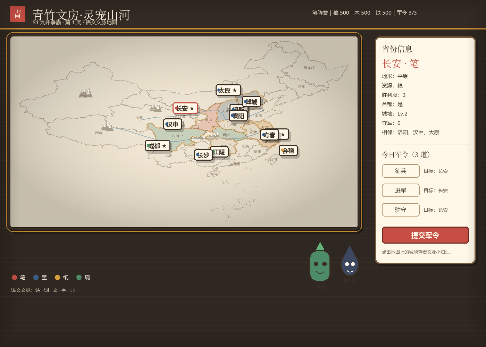
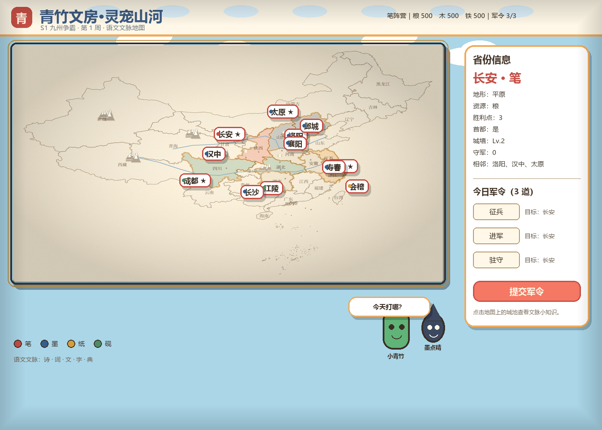
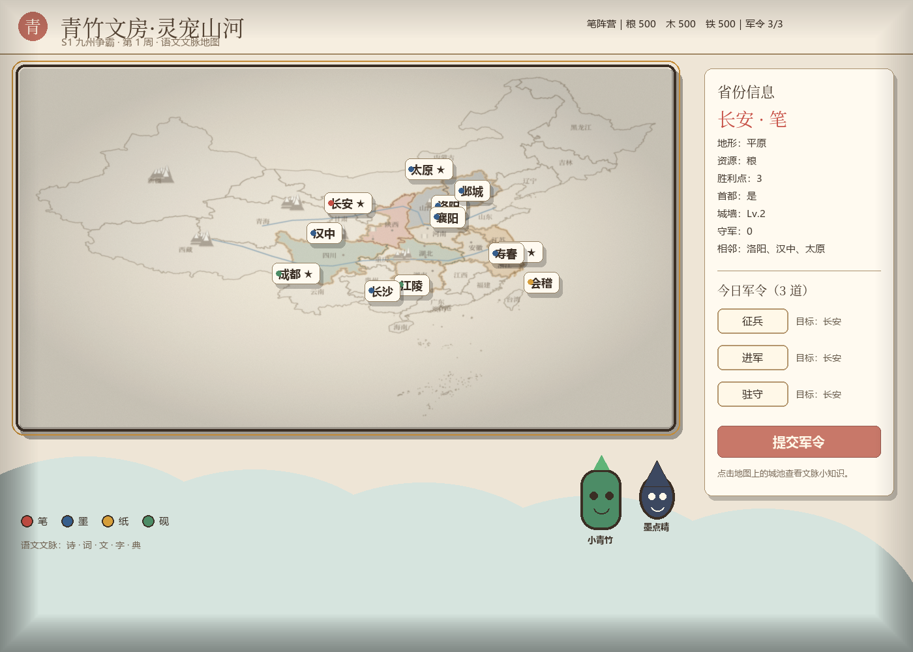

青竹文房·灵宠山河 — 三套风格样板
代码生成的同布局对比稿；地图底图暂用真实省界，最终会重绘为对应风格。文字为示意，正式版用 Godot 真字体。

A. 纸雕绘本卡通（推荐）
深色木桌 + 纸片省份 + 厚描边 + 木牌城池。最像“桌游地图”，战略感最强，但需要把底图也改成彩色纸片。

B. Q版国风
明亮天空蓝 + 圆角卡片 + 可爱班宠。最容易让初中生觉得“想点开”，但地图底图还要更卡通、更亮。

C. 手绘水彩卡通
柔和、绘本、留白多。气质最好，但战略信息最弱，远看容易糊；适合做剧情/图鉴，不太适合做主战场。